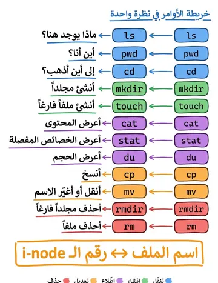
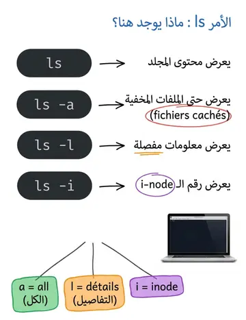
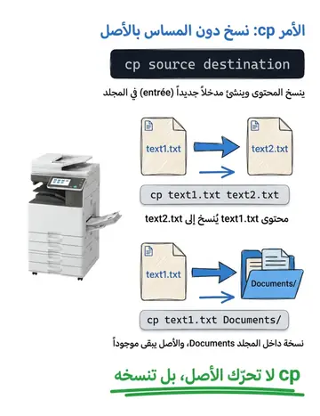
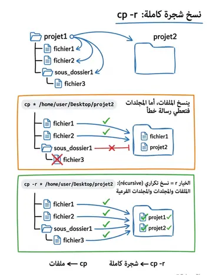
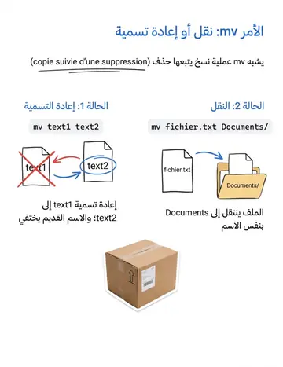
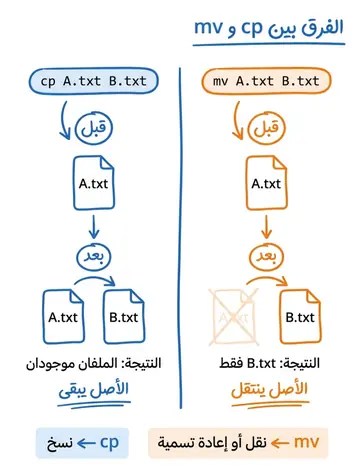
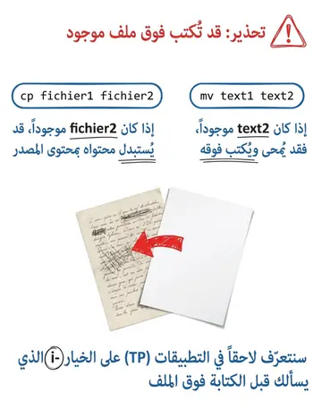
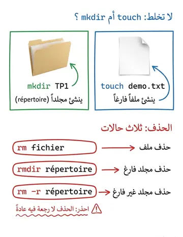
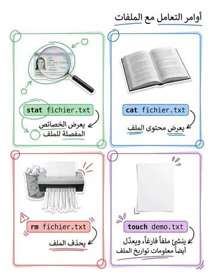
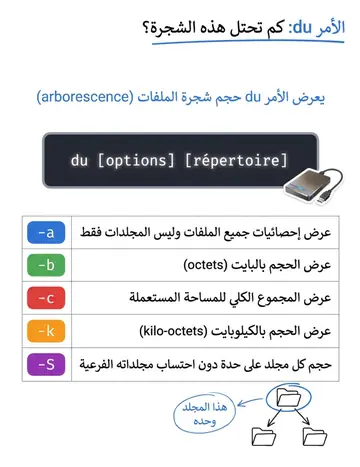

Commandes d'accès & manipulation
أوامر الوصول والتعامل مع الملفات
الشرح بالعربية
ls للعرض، cp للنسخ (cp src dst، cp fichier dossier/، cp -r للمجلدات)، mv للنقل أو إعادة التسمية (نسخ + حذف)، rm للحذف (-r للمجلد، -i للتأكيد، -f للفرض). touch تنشئ ملفًا فارغًا أو تحدّث تاريخه. find تبحث بالخصائص مثل find /home -name '*.c'، وlocate تبحث عبر قاعدة بيانات محدثة. الحذر من rm -rf لأنه لا يسترجع.
Illustrations de la leçon
10 planches · cliquez pour agrandir









Contenu de la leçon
Le cours en français, avec les termes techniques et les exemples.
QUELQUES COMMANDES D'ACCÈS AUX
RÉPERTOIRES
Commande
Description
lsAffiche la liste des fichiers contenus dans un répertoire
Options :
-a : liste aussi les fichiers cachés;
-l : donne des informations détaillées sur chaque fichier;
-i : donne le numéro de l'i-node du fichier.
mkdircrée un répertoire.
cdChange le répertoire de travail (répertoire courant).
pwdDonne le chemin absolu du répertoire courant.
rmdirSupprime un répertoire vide.
QUELQUES COMMANDES D'ACCÈS AUX
FICHIERS
Commande
Description
catAffiche le contenu du fichier.
stat
Affiche les caractéristiques du fichier.
lsAffiche les caractéristiques d'une liste de fichiers
(l'option -i affiche les numéros d'i-node des fichiers).
rmSupprime un fichier.
touchModifie les caractéristiques de date d'un fichier
(permet également de créer un fichier vide).
COMMANDES DE MANIPULATION DU
SYSTÈME DE FICHIERS
Commande
Description
cpCopie de fichier :
cp <source> <destination>
Duplication du contenu du fichier et Création d'une entrée dans un répertoire.
mvDéplace/Renomme un fichier :
mv <source> <destination>
Suppression d'une entrée dans un répertoire et création d'une nouvelle entrée dans un répertoire.
Si on copie (déplace/renomme) un fichier dans un fichier qui existe déjà, ce second fichier est modifié (contenu écrasé et caractéristiques modifiées)
COMMANDE DE MANIPULATION DES
FICHIERS
Commande : cp
Cette commande permet la copie de fichiers.
Elle s’utilise sous quatre formes :
La copie d’un fichier source dans un fichier destination.
Exemple :
Dans le répertoire p2, copie du fichier text1.txt dans text2.txt
COMMANDE DE MANIPULATION DES
FICHIERS
La copie d’un fichier dans un répertoire.
Exemple :
La copie d’un répertoire dans un autre (seuls les fichiers sont copiés :
on obtient un message d’erreur pour la copie des répertoires).
Exemple :
Copie le contenu du répertoire projet1 dans /home/user/Desktop/projet1
Dans un répertoire projet2
Commande :
$ cd /home/user/Desktop/projet1$ cp * /home/user/Desktop/projet2COMMANDE DE MANIPULATION DES
FICHIERS
La copie récursive permet de copier une arborescence.
Exemple :
Copie de l’arborescence du projet1 dans le répertoire projet2.
Commande :
$ cd /home/user/Desktop/projet1$ cp –r * /home/user/Desktop/projet2COMMANDE DE MANIPULATION DES
FICHIERS
Commande : mv
Cette commande est équivalente à une copie, suivie d’une suppression.
Elle s’utilise sous deux formes :
Transfert de text1 dans text2 et suppression de text1; Si text2 existe, il est effacé.
Exemple :
user@pc :~$ mv text1 text2
COMMANDE DE MANIPULATION DES
FICHIERS
Transfert de(s) fichier(s) cité(s) dans le répertoire avec
le(s) même(s) nom(s) :
mv fichier(s) répertoire
Exemple :
COMMANDE DE MANIPULATION DES
FICHIERS
Commande : rm
Supprime un (ou plusieurs) fichier(s) d’un répertoire.
Exemple :
Suppression du fichier text1.txt du répertoire projet1.
$ cd /home/user /Desktop/projet1$ rm text1.txtCOMMANDE DE MANIPULATION DES
FICHIERS
Commande : TOUCH
Cette commande permet (entre autres) de créer un fichier vide.
Exemple :
$ touch demo.txtCOMMANDE DE MANIPULATION DES
FICHIERS
$ : ce symbole indique le niveau d'autorisation sur la machine.Il peut prendre 2 formes différentes :
$ : signifie que vous êtes en train d'utiliser un compte utilisateur
"normal", avec des droits limités (il ne peut pas modifier les fichiers système les plus importants).
# : signifie que vous êtes en mode super-utilisateur, c'est-à-dire que vous êtes connecté sous le pseudonyme "root". Le root est l'utilisateur maître qui a le droit de tout faire sur sa machine (même de la détruire ).
NIVEAU D’AUTORISATION
COMMANDE DE MANIPULATION DES
FICHIERS
Commande : find find [chemin] [options] [expression]
Recherche un fichier à partir du répertoire donné.
Options les plus fréquentes :
-name :
Recherche d'un fichier par son nom
-iname :
Même chose que -name mais insensible à la casse
-type :
Recherche de fichier d'un certain type
-atime :
Recherche par date de dernier accès
-mtime :
Recherche par date de dernière modification
-link :
Recherche du nombre de liens au fichier
-user :
Recherche de fichiers appartenant à l'utilisateur donné
-group :
Recherche de fichiers appartenant au groupe donné
COMMANDE DE MANIPULATION DES
FICHIERS
$ find /home/ -name monfichierRecherche le fichier monfichier dans toute la descendance de /home/
$ find . -name "*.c"Recherche tous les fichiers ayant une extension .c.
$ find . -mtime -5Recherche les fichiers du répertoire courant qui ont été modifiés entre maintenant et il y a 5 jours.
$ find . ! -user rootAffiche tous les fichiers n'appartenant pas à l'utilisateur root
Commande : locate Nom_du_fichier
Permet de chercher un fichier donnée à travers son nom des fichiers.
LA RECHERCHE DE FICHIERS
Commande : locate Nom_du_fichier
Recherche dans tous les répertoires du disque dur